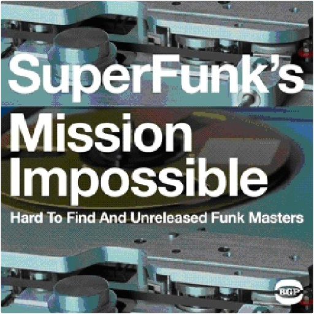

the return of the funk soul sistersbgp the return of the funk soul sistersbgp  The first volume of Funk Soul Sisters was a good seller, and volume 2 repeats the formula of mixing sought-after and in-demand sister-funk records with well-known classics. Both the Jackie Moore and the Elsie Mae records, although well known, are now very difficult to find on original release. Honey & the Bees' 'Love Addict' is currently the most in-demand record on the funk scene, with copies regularly going for several hundred dollars. The CD includes the previously unissued Detroit funk master 'Just a Mistake' by the Ebonettes, which has recently been championed by DJ Snowboy. ACE. 2005.  superfunk, volume 5: superfunk is back - rare and classic funk 1968-1977bgp superfunk, volume 5: superfunk is back - rare and classic funk 1968-1977bgp Each volume of BGP's SuperFunk series can be relied upon to deliver a heaping serving of quality rare funk, and this fifth installment is no exception. While it might be on the whole more "rare" than "classic," much of this is really fine funk that happens to be rare, not rare funk that collectors rave about solely because the vinyl sells for a lot of money. You won't find any big names here, except a past-prime Jackie Wilson, Dyke & the Blazers, and perhaps Alvin Cash, whose track is a 1970 remake of his 1965 hit "Twine Time." And while there aren't any James Brown cuts, there are certainly a bunch of moments when you'll almost think you're listening to him, so pervasive is his influence on the likes of La May & Company's "Free the Soul Man," the Mello Matics' cover of his "Mother Popcorn," and the Phillips Brothers' two-part "I Got Hurt." But there are also a good number of fine tracks that aren't duly imitative, like Smithstonian's [sic] slow-burning "Just Sitting" — a funk rarity not only in being hard to find, but also being funky and super-slow, with spooky organ. Miles Grayson's "Home Brew" is a cool mixture of "Night Train" with "Gloria"-like garage rock guitar riffing, while Lorenzo Holden's instrumental "Hold On" adds some Latin spice and jazzy flute to the mix, sounding a little like early War getting far out. Some of the other songs are just so-so, lowering this on the whole from the ranks of the excellent to the very good. ~ Richie Unterberger, All Music Guide  superfunk, volume 4: rare and classic street funk from the vaults 1966-1973bgp superfunk, volume 4: rare and classic street funk from the vaults 1966-1973bgp Double vinyl LP pressing. Subtitled - Rare & Classic Funk from the Vaults 1966-1972. UK compilation featuring a mix of sought-after classics, super-rare masterpieces, & undiscovered gems from such artists as Billy Garner, Ron Buford & Ural Thomas, Friends of E. Rodney Jones, Chili Peppers, Vernon Garrett, Chet Ivey & His Fabulous Avengers, Lee Harris, & more. 20 tracks. BGP. 2004.  superfunk, volume 6: the mighty superfunk - rare 45s and undiscovered masters 1967-1978bgp superfunk, volume 6: the mighty superfunk - rare 45s and undiscovered masters 1967-1978bgp 2008 double vinyl LP release. BGP's unique access to record company vaults across the U.S. means that Mighty Super Funk features titles that you simply can't get anywhere else. This time we have breathtaking Latin Funk from Jamo Thomas and also Los Africanos whose take on 'It's Your Thing' is a dead ringer for Ocho's classic 'Hot Pants Road' - mainly because it has the same team of musicians and producers behind it. Also at the peak of Funk discoveries are Eleanor Rigby's 'Queen of Losers' which is a new tune based on the rhythm of Brenda George's 'I Can't Stand It', and 87th Off Broadway's 'Moving Woman', a scorching piece of female-led group Funk. All of these will be essential must haves for funk fans. Beat Goes Public. super funk's mission impossible: hard to find and unreleased funk mastersbgp Double vinyl LP pressing. 2011 collection, an installment in the best-selling Super Funk series, containing 20 tracks of super-rare funk, 13 of them previously unreleased. Of the seven issued titles, Betty Gouche's is one of the most in-demand records of the moment. Also highly regarded is the Jim Pipkin, James Brown-alike 'Walking the Duck', while the Eternal Flames' record would set you back hundreds of pounds. The other four are in-demand and none could be bought for less than £100. The unissued tracks include an instrumental version of the break-beat classic 'I Got Some', perfect for producers wanting to swipe the beat. There's a strong chunk of Gospel funk from Dorothy Norwood, gems from the Music City and Dave Hamilton vaults and a scorching slice of southern fried sister funk 'Talk Is Cheap' by an unknown Soul singer. BGP.  brass constructionbrass construction brass constructionbrass construction 180 gram audiophile vinyl / THEIR FIRST ALBUM FROM 1975, INCLUDES THE FUNK HITS 'MOVIN' AND 'CHANGIN'  two sevens clashculture two sevens clashculture Era-defining classic from 1977 produced by Joe Gibbs and Errol Thompson featuring Sly & Robbie, Tommy McCook & others...ESSENTIAL!!! |


 Made with Delicious Library
Made with Delicious LibraryNancy, State zipflap congrotus delicious library Thomas, Julien